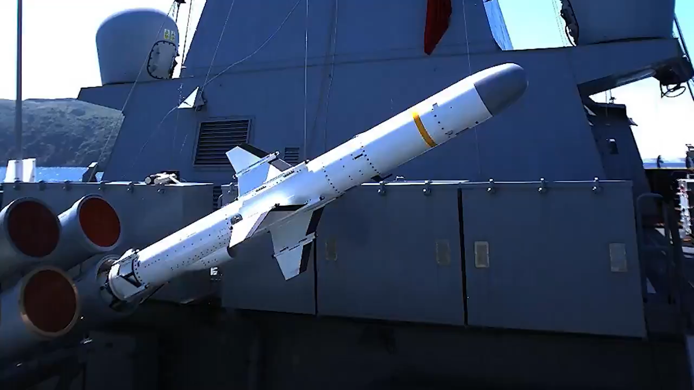
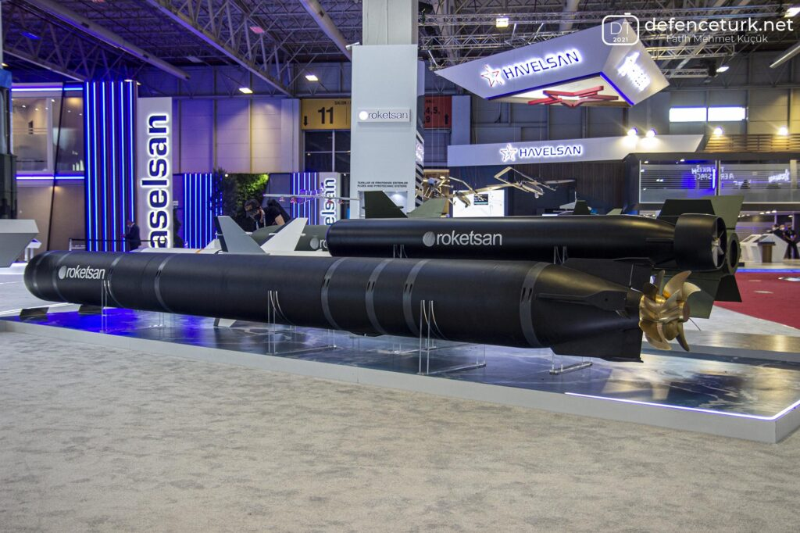
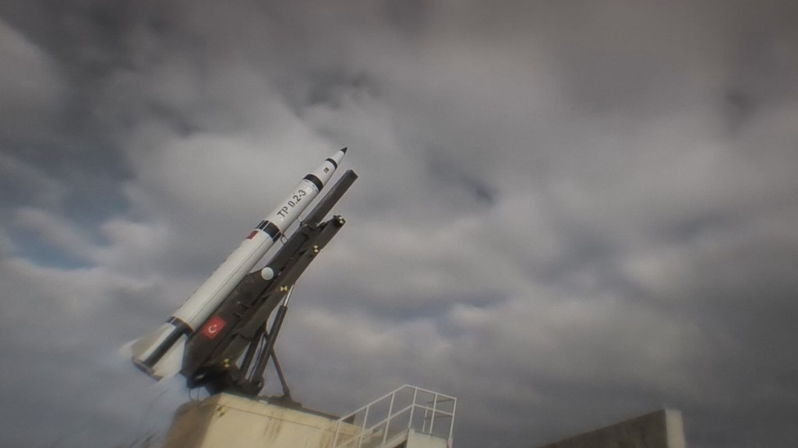

Türk Donanmasına ATMACA gemisavar füzesi teslimatları başladı
* Antalya’da düzenlenen Savunma ve Havacılık Sanayiinde Küresel Stratejiler Konferansı sırasında T.C. Savunma Sanayii Başkanı Prof. Dr. İsmail Demir ATMACA gemisavar füzesine yönelik açıklamalarda bulundu. Demir, ATMACA’nın teslimatlarının halihazırda başladığını ve AKYA’nın test torpidosunun atıldığını ve 2022’de envantere alınacağını açıkladı.
Geliştirme süreci boyunca birçok atışlı testi yapılan ATMACA, Haziran 2021’de canlı harp başlıklı konfigürasyonu ile icra edilen testte de hedefi başarı ile imha etmişti. ATMACA’nın sözleşmesi imzalanan ve 2025’te envantere girmesi planlanan karadan karaya seyir füzesi ve denizaltıdan atılan gemisavar füzesi sürümleri için çalışmalar devam ediyor.
Her türlü hava şartında kullanılabilen modern bir güdümlü mermi olan ATMACA, karşı tedbirlere dayanıklılığı; hedef güncelleme, yeniden saldırı ve görev iptal yeteneklerini bünyesinde barındırıyor. Bunlarla birlikte ileri görev planlama sistemi (3D routing) sayesinde de sabit ve hareketli hedeflere karşı etkili olabiliyor. Küresel Konumlandırma Sistemi, Ataletsel Ölçüm Birimi, Barometrik Altimetre ve Radar Altimetre alt sistemlerini kullanarak hedefine doğru yol alan ATMACA, hedefini yüksek doğrulukla bulabilmek için aktif radar arayıcısını kullanıyor.
220 kilometrenin üzerinde bir menzile sahip olan ATMACA, görüş hattının ötesindeki hedefler için de büyük bir tehdit oluşturuyor. ATMACA’nın; hedef güncelleme, yeniden saldırı ve görev iptal kabiliyetlerinin ardında ise sahip olduğu gelişmiş ve modern veri bağı (data link) yer alıyor. Buna ek olarak görev profilini sunabilen sistemde; hedefe zamanlama, hedefi vurma ve hedefi ateş altına alma operasyonel modları da mevcut.
ATMACA, yapısal tasarımı ile de fark yaratıyor. Güdümlü mermi, gelişen teknolojiler doğrultusunda, ağırlığının azaltılması ve yapısal dayanımının artırılması için kompozit malzeme teknolojileri kullanılarak tasarlandı ve füzenin üretiminde, bu teknolojilerden azami ölçüde yararlanıldı.
Roketsan, gelecek dönemde, ATMACA’nın Kızılötesi Arayıcı Başlık, Dual Arayıcı Başlık gibi donanımlara sahip versiyonları ile kabiliyetlerini geliştirmeyi hedefliyor. Öte yandan denizaltılardan ve dikey atım sistemlerinden atılabilecek versiyonları ile de platform çeşitliliği artırılacak. Roketsan, ATMACA’nın sahip olduğu yüksek millilik oranını gelecek dönemde daha da artırmak ve böylelikle dışa bağımlılığı azami seviyeye indirmek için çalışmalarına yüksek motivasyonla devam ediyor.

AKYA Ağır Torpidonun kabulleri Kasım ayı sonunda başlıyor
* 10. Deniz Sistemleri Semineri kapsamında düzenlenen “Sualtı Sistemleri” oturumunda konuşma yapan ROKETSAN Sualtı Sistemleri Proje Yöneticisi Levent ÇOMOĞLU devam eden projelere ilişkin bilgiler verdi.
Çomoğlu AKYA ağır torpidonun Türk Deniz Kuvvetleri tarafından kabullerine 2021 içerisinde Kasım ayı sonunda başlayacağını ve Aralık ayında tamamlanacağını aktardı. Bahse konu teslimatlar Düşük Ölçekli İlk Üretim kapsamında yapılacak. AKYA projesinin seri üretim sürecindeki teslimatlarının ise 2022 yılında gerçekleştirilmesi hedefleniyor. Türk Deniz Kuvvetleri tarafından 2022 içerisinde platform hedefe yönelik atışlı faaliyetlerinde de icra edilmesi planlanıyor.
AKYA Projesi ile birlikte, Roketsan’ın hassas güdümlü, yüksek hıza sahip akıllı roket ve füze sistemleri geliştirme konusunda uzun yıllar süren hassas çalışmalar ile edinmiş olduğu kritik kabiliyetler denizlerin altına iniyor. Denizaltılardan, muhtelif suüstü hedefleri ve denizaltılara karşı atılan ve tamamen millî yeteneklerle geliştirilen AKYA ile Türk Deniz Kuvvetlerinin sualtı platformlarına yönelik önemli bir ihtiyacı milli imkanlarla karşılanmış olacak.
AKYA’nın kalifikasyon çalışmaları devam ederken Türk Deniz Kuvvetlerinin öncelikli ihtiyaçlarının karşılanmasına yönelik Düşük Ölçekli İlk Üretim faaliyetleri de sürdürülüyor.
AKYA Ağır Sınıf Torpido
Türk Deniz Kuvvetleri’nin 533 mm ağır sınıf torpidosu ihtiyacını yerli imkanlarla karşılayacak olan AKYA’nın yakın zamanda TCG Gür denizaltısından atışlı testleri icra edilmişti ve Preveze sınıfı denizaltılara entegrasyonu için sözleşmesi imzalanmıştı. AKYA, 50+ km menzile, 45+ knot azami hıza; Karşı-Karşı Tedbir kabiliyetli Aktif/Pasif Sonar başlık ve Dümen Suyu güdümünün yanında fiber optik kablo ile harici güdüm kabiliyetine de sahiptir.

ROKETSAN, Falcon 9 benzeri kurtarılabilir roket üzerine çalışacak
* T.C. Savunma Sanayii Başkanı Prof. Dr. İsmail Demir, HİSAR O+’nun kabul testlerini tamamladığını açıkladı. Demir, “Savunma sanayiimiz bir başarıya daha imza attı!” dedi ve “Milli hava savunma füze sistemimiz HİSAR O+ envantere giriş öncesi son kabul atışında yüksek irtifadaki yüksek hızlı hedefi imha etti. HİSAR O+ artık bütün unsurlarıyla tam kapasite görevinin başında. Şanlı ordumuza hayırlı olsun” ifadelerinde bulundu.
Milli Savunma Bakanlığı tarafından yapılan açıklamada, “Orta İrtifa Hava Savunma Füze Sistemi (HİSAR-O) Projesi’nde, muayene ve kabul atışları kapsamında 24 Aralık 2021’de Aksaray Atış Alanında icra edilen HİSAR-O Füzesi atışında insansız hedef uçak başarı ile vuruldu.” ifadesine yer verildi.
Cumhurbaşkanı Yardımcısı Fuat Oktay, TBMM Plan ve Bütçe Komisyonu’nda Cumhurbaşkanlığı’nın 2022 yılı bütçesine ilişkin sunumunda HİSAR O+’nın IIR güdümlü füzelerinin teslimatlarının 2022’de tamamlanacağını belirtmişti. TEKNOFEST’21 kapsamında HİSAR O+ hava savunma füze sisteminde kabul testlerinin Ekim 2021 içerisinde başlayacağı bilgisi edinilmişti. HİSAR O+ Hava Savunma Sistemi seri üretim sözleşmesine göre sistemin teslimatının 2024 yılına kadar tamamlanması hedeflenmekte.
Yerli ve Milli imkânlarla geliştirilen HİSAR O+ Sistemi dağıtık ve esnek mimari yeteneğiyle nokta ve bölge hava savunma görevleri icra edecek. HİSAR O+ Sisteminin batarya ve tabur yapılarında teşkilatlanma alt yapısı bulunuyor. Sistem; Atış Kontrol Merkezi, Füze Fırlatma Sistemi, Orta İrtifa Hava Savunma Radarı, Elektro Optik Sistem, Kızıl Ötesi Arayıcı Başlıklı Füze ve RF Arayıcı Başlıklı Füze unsurlarından oluşuyor.
HİSAR-O+ sistemi standart olarak batarya seviyesinde 18 (3 atıcı araç), tabur seviyesinde 54 (9 atıcı aracı) önleme füzesi bulundurmaktadır. Savaş uçağı tespit ve takip mesafesi 40-60 km olan sistem >60 hedef takip edebilmektedir. Sistem IIR güdümlü füzeleriyle 25 km, RF güdümlü füzeleriyle tahminen 25-35 km bandında azami menzile sahiptir.
HİSAR O+ Hava Savunma Füze Sistemi, envantere giriş öncesi son kabul atışında yüksek irtifadaki yüksek hızlı hedefi imha etmeyi başardı. HİSAR O+ böylece kabul faaliyetlerini tamamlamış ve bütün unsurlarıyla ve tam kapasite göreve hazır hale gelmiş oldu. HİSAR hava savunma füze sistemlerinde ilk olarak HİSAR A+ teslim edilmişti. Test atışları süren uzun menzilli hava savunma sistemi SİPER’in ise 2023’te kullanıma hazır hale gelmesi hedefleniyor.